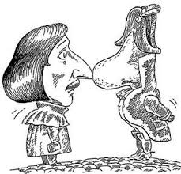

Nikolai Gogol (1809-1852)
Important things about him
- Romantic writer - characters are smaller than life (almost inanimate)
- Belinsky claimed that he was a social satirist of Russian empire (1840s) - literature reflects life (without mediation)
- Eichenbaum discussed his language - birth of Formalist criticism (1918) - focus on language and mediation

Gogol and his so-called nose